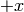

Provides conversion between polar and cartesian coordinates.
Computes cartesian 2D coordinates [y, x] from 2D polar coordinates [r, phi].
mesh is in polar coordinates [r, phi].
Calculates the cartesian coordinates [y, x] from the polar coordinates.
Calculates 2D polar coordinates [r, phi] from 2D cartesian coordinates [y, x].
mesh is in cartesian coordinates [y, x].
Calculates the polar coordinates [r, phi] from the cartesian coordinates [y, x].
The angle is calculates mathematically positive starting in the direction os  with phi=0.
moviemaker2.stacks
Built-in Extensions
Enter search terms or a module, class or function name.